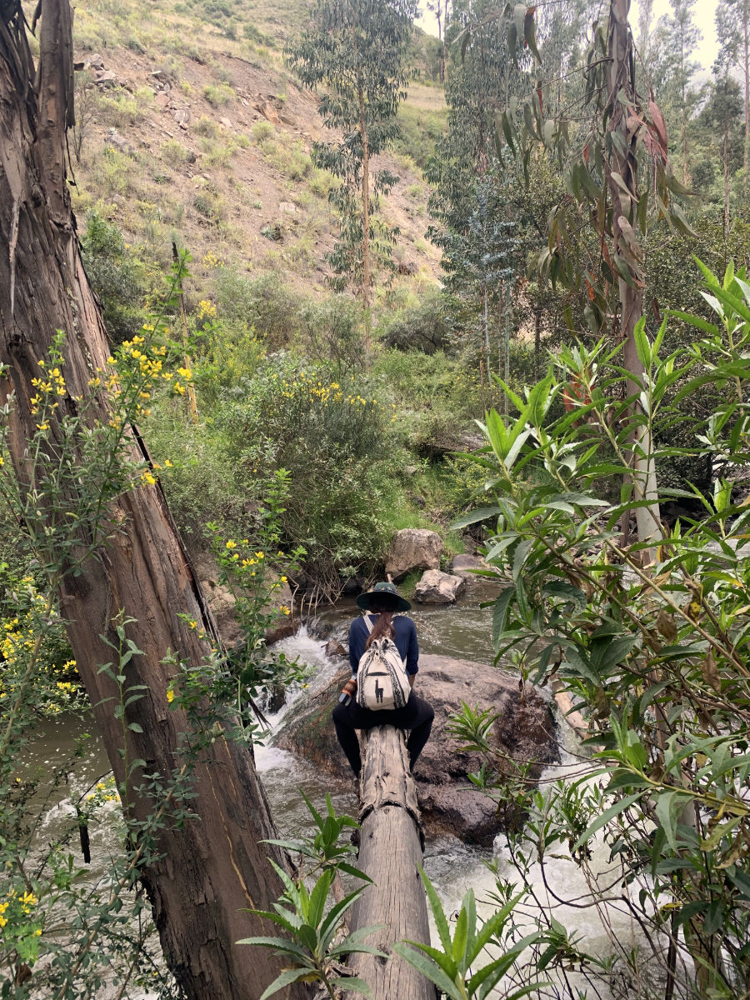

09 April 2022
Of ups and downs
Whoever arrives and hangs about the Pisac region usually have their attention drawn to the massive mountain formations that watches over the town, and even from below it is possible to see small pieces of what was once a settlement, nowadays in ruins, as well as the terraces which from afar looked like steps no higher than a metre.
This Saturday we were finally set to go on a hike up to the Pisac ruins and experience our little town from a different perspective. Although the hike did happen, unfortunately it did not go as planned but we still had an amazing time.
At around 8:00, after our breakfast, we headed to the market, which already became our initial point of almost every hike and adventure, to meet two other friends who would join our party. Our friend Amber, who already done this hike a couple of times and Eve, who was also a first timer. There we bought a few fruits, a selection of chips made out of sweet potato, manioc and dried bananas and some granola bars of Kiwicha (or wind bars as I like to call them).
With our sticks in hand and excitement for a new adventure, our party of five left town by the hard sand road which hugs the bottom of the mountain we were about to hike. Not too long after we were already leaving the sand road and going slowly up into a more natural path that goes by a stream of rocky river, with morning birds singing at one side and the fierce sound of water hitting rock on the other.


The path followed upwards between eucalyptus forests, massive rocks, open green fields and narrow passages almost fully covered with vegetation, but never leaving the side of the fast stream of water. When we finally reached the point where the actual way up to the mountain starts, we were faced with our first fun challenge; to cross the rapid stream of rocky waters. Our guide Amber already knew what was to come and, with a sweet and joyful smile, she pointed at our “bridge”, a thick eucalyptus log that had fallen and could be used for crossing. She also demonstrated, using a nearby fallen tree, how we should sit and push ourselves across, and followed by being the first to cross. Some of us hesitated for a bit and studied nearby rocks in a not successful search for an alternative path through the water, but quickly the idea was erased and the spirit of adventure kicked in. At the end we all crossed the log bridge and were happily following the narrow path up.



From here it quickly started to go up and soon we were already by the terraces, which now were big stone walls with more than two metres of height. It felt amazing to be in such ground and wall formations and it made me wonder how it was built and how long it took back then. Each wall had a space of around 6 metres between each other and they all had stone steps, which helped us go one floor higher.
The views from here were, of course, breathtaking and made us realise how the mountains change with each new angle we look at them, and with every couple of steps up, a new mountain shape seemed to have formed in front of us. The weather was on our side too, for it stayed overcast all the way up and down, making it less harsh on our heads and backs.


After about two hours of hike we were reaching the ruins. They could be seen now very close from us, just a few more steps and… STOP! There stood a single man, armed with a green hat and dark green clothing with a phone (or walkie talkie) in his hands. He quickly spotted us and came down on a rush and before we could say any ¡Hola! or buenos dias, he was bringing the phone to his mouth rehearsing a call to the police. "Turn back, you can't come this way. Do you have tickets?" Were his words to us in Spanish. We all tried, with our broken Spanish, to explain we've been following the river and found the path; that we didn't know it was a private hike or similar. He kept on his harsh face and words. “I am calling the police. You better go down right now. That way. Go! Go!”. He kept bringing the phone to his mouth and saying things to whoever was on the other side of the line (if the call was really real). Unwillingly but obediently we sighed, turned our backs and started our early walk down the same way we came from. All the way down we could see the man standing at the top watching us, like a warning totem, some times blowing his whistle and waving his hand as if telling us to go faster or to go another way. We took our time down and used the stone steps to go down every one of the walls, not letting that sudden stop lower our excitement. In between talks and the blow of the whistle above we would stop for a sip of water and appreciate the views, sounds, smells and wild plants.

Once we were down and back by the river, we decided to keep on following the stream until we reached a nice grassy spot by the rocky waters. Here we finally had our food pause, followed by refreshing our faces, hand and feet on the cold stream and chilling having conversations of all sorts.
Where the river ended and the sand road started we exchanged warm hugs and smiles and gratitude for this nice adventure and went our separate ways, with mountains and rivers and whistles in our minds.
— Maha